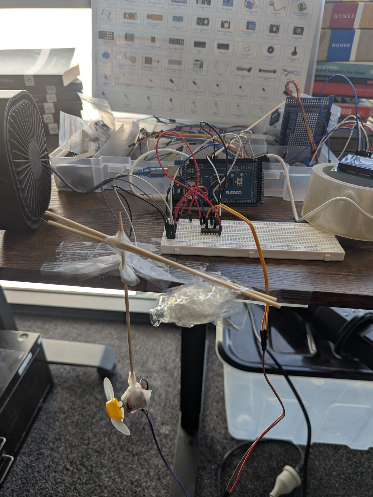

I put a fan on a stick, gave an LLM four numbers and one way to act, and asked it to model the world it was in.
How does it work? The setup is simple. A stick with a controllable fan is connected to the knob of a potentiometer. The agent can detect two things: the potentiometer reading, and the time. The agent has one way to act in the world: to turn on the fan at whichever speed, for any duration, and in either the clockwise or counter-clockwise direction.
The agent is dropped into the world with no context at all, and asked to simply model the world it exists in.
An interesting thing happens when this occurs. The agent may start by simply recording its observations, then modelling the world based on historical data.
Then it begins to make predictions, and test those predictions with its own experiments.
As you would imagine, it develops a fairly accurate model of the world it exists in through these means.
But real intelligence is never about modelling what is simple and known. It is about modelling what is messy and unknown.
It may perform the same experiment twice, but get two different results. The question is: can it determine the threshold between unexplainable error bars, or a new latent variable determining new rules of the world?
How does it know when the conditions of the world have changed? What thresholds does it hold for each changing state?
And how does it get quicker at determining the rules? Is there a cost between a high accuracy of the modelled world and the number of experiments it performs to model the world?
These are questions I hope to find the answers to someday — although, as with all things in life, it depends on context and domain.
More to come as I iterate further on this experiment and more.
On method: the rig is an Elegoo Mega kit and a kitchen skewer. The firmware, the harness the agent plays through, and the camera tracking were built in long collaboration with AI; the agent playing blind was Claude Code. The judgement calls and the responsibility sit with the author.
Threads, corrections, and rabbit holes welcome.